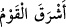

derilerinin inceliği sebebiyle yarışırcasına koşmalarından ileri gelir.
Hadiste Allah’a yönelenler, tavsif edilen o vakitte kuşluk namazı kıldıkları için
övülmektedirler. Çünkü güneşin yükselmesiyle harâret şiddetlendiği zaman insan
psikolojisi istirâhate meylederken, Allah’ı anmaya karşı ünsiyyet kazanmış, zikrullaha
ülfet etmiş bu kişilerin gönlüne O’ndan başka bütün isteklerden kopup O’na yönelme
arzusu gelir.
Fakîr (Bursevî) der ki: Yukarıdaki iki rivâyet iki şekilde uzlaştırılabilir:
1- “İşrak” lâfzının, insanlar şurûk’a yâni güneşin doğuş vaktine girdiler anlamındaki (
) ifâdesindeki fiilin masdarı olması ihtimal dâhilindedir. Ki o zaman güneşin
doğuşu ile zevâli arasındaki vakit olan kuşluk vakti anlamına gelmez.
2- İşrak namazının ilk vakti, güneşin bir mızrak boyu yükseldiği vakit; son vakti ise
kuşluk namazının ilk vaktidir. Buna göre sabahleyin kılınan kuşluk namazı, akşamleyin
kılınan ikindi namazına mukabil olmuş olur. Bu sebeple de güneş doğup iyice
parlayıncaya ve aydınlığını gönderip bulanıklığı tamamen gidinceye dek kılınması
gerekmez. Tıpkı ikindi namazının güneş iyice sarardığı zaman kılınması gibi. O halde,
Hz. Peygamber’in ‘bu, işrak namazıdır’ ifâdesi, ya son vaktine nisbetle, parıldama
(işrak) olması mânâsındadır ya da ilk vaktine nisbetle duhâ/kuşluk olması
mânâsındadır.
Şeyh Abdurrahman Bistâmî (k.s.) Tervîhu’l-kulûb’da der ki: İşrak namazı niyyetiyle
dört rek’at namaz kılınır. Sünnette vârid olduğuna göre, Peygamber (s.a.) birinci rek’atte
Fâtiha’dan sonra Şems suresini; ikinci rek’atte Leyl’i; üçüncü rek’atte Duhâ’yı;
dördüncü rek’atte ise İnşirâh suresini okurdu. Duhâ/kuşluk namazının vakti -ki sabah
namazı ile öğle namazı vakitlerinin ortasındaki vakittir- girince de kuşluk namazı
kılardı. Kuşluk namazı en az iki rek’at; dört veya onikiye kadar daha fazla rek’at olarak
da kılınır. Oniki rek’atten fazla kıldığı hiç nakledilmemiştir. Üç selâm vererek
kılınabileceği gibi, istendiği takdirde altı selâmla da kılınabilir.
Bu namazın fazileti hakkında çok sayıda rivâyet vardır: “Kim iki rek’at kuşluk namazı
kılarsa, borçlu bulunduğu organlarının şükrünü eda etmiş olur.” Çünkü namaz,
bedendeki bütün organlarla yapılan bir ameldir. “Kuşluk namazını oniki rek’at olarak
kılanlar için ise cennette altın bir köşk inşa edilir. Cennette kuşluk (duhâ) adı verilen
bir kapı vardır ki kıyamet günü gelip çattığında, bir münâdî; ‘kuşluk namazına devam
edenler nerede? Sizin kapınız burası! Allah’ın rahmeti sâyesinde cennete girin’
diyecektir.”
19. Toplu halde kuşları da onun emri altına vermiştik. Hepsi O’na yönelmiştir.
Kuşlar anlamındaki (
), (
) kelimesine ma’tuftur. (
), (
)’in çoğuludur; (